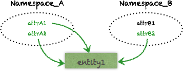

Here’s a quick overview of various building blocks in the Molecule eco-system.
A molecule is a model of a data structure containing one or more attributes.
Here we describe a data structure of name, age of persons and what street they live on:
Person.name.age.Address.street.get.head === ("John", 24, "5th Avenue")
Calling get on a molecule returns typed data that matches the molecular data structure.
An attribute is the core element of Molecule. Molecules are composed of attributes.
We could also call it a “property” a “field” etc. It’s an intrinsic value of an atomic piece of information about something.
Attributes have
String, Int etc.A Datom brings context to an Attribute.
A Datom describes a fact, for instance that “John likes pizza”. A timestamp adds information about when John stated that he likes pizza. A fifth piece of information “added” tells if the fact is asserted (true - John likes) or retracted (false - John no longer likes).
So, a Datom consists of 5 components of information:
johnId likes pizza 12:35:54 true
| | | | |
Entity Attribute Value Transaction/time Operation
A molecule can retrieve this information:
// Q: Who likes what and when did they state it?
Person.e.likes.txInstant.get.head ===
// A: John said he likes pizza at 12:35:54
(johnId, "pizza", Date("12:35:54"))
When multiple different Datoms (attributes) share the same entity id, they together describe this entity. Or we say that “the Entity has 3 attributes”.
In our example John is an entity that has a name “John”, likes “pizza” and is 24 years old - a pizza-liking 24-year-old John:
| Entity id | Attribue | Value |
|---|---|---|
| 101 | :Person/name | “John” |
| 101 | :Person/likes | “pizza” |
| 101 | :Person/age | 24 |
As you see, the concept of an entity is very flexible since it can be defined by endless combination of attributes and values that will give it unique characteristics.
This is far more powerful than thinking in terms of “defining a Person class”! When we instead let the combinations of atomic attributes define entities of molecular data structures, our semantic capabilities and expressiveness explode exponentially.
Attributes are loosely organized in Namespaces to semantically group qualities of a subset of our domain:
As we saw, an Entity can have any Attribute from any Namespace associated to it:

An entity is therefore not like a row in a table but rather a “cross-cutting” thing that we can freely associate any attribute value to.
Since the transaction time is part of all Datoms, we can ask time-related questions:
// Who liked what on the 5th of november?
Person.name.likes.txInstant_(nov5date).get.head === ("John", "pizza")
Datomic even offers various powerful ways to work with the time dimension of our data:
getAsOf some point in timegetSince some point in timegetHistory of an entity or attributegetWith(tx-stmts) to test a future what-if scenarioWe can mix relationships, conditional values, logic etc in our molecules to express complex and precise data structures:
Community.name.`type`("twitter" or "facebook_page")
.Neighborhood.District.region("sw" or "s" or "se")
which will find “names of twitter/facebook_page communities in neighborhoods of southern districts”.
Compare Molecule with another query language, set up a Molecule project or learn more about molecule code…